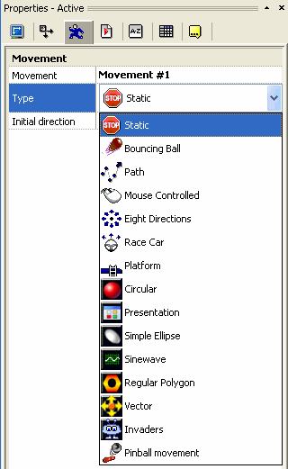

Ревизия 1.1 от сентября 2008
Движения — это свойство, которое можно назначить многим визуальным объектам в CF2.5, особенно активам. Как следует из названия, движение, назначенное объекту, определяет, как он перемещается или управляется на экране. Движения позволяют создавать сложные эффекты без необходимости писать с нуля полноценный движковый механизм для каждого объекта. Каждое движение обладает набором собственных свойств, что позволяет адаптировать его под конкретные задачи. Чаще всего это осуществляется путём задания значений в панели свойств объекта на этапе разработки, а иногда настройки можно менять и во время выполнения с помощью редактора событий. В CF2.5 по умолчанию предусмотрено несколько стандартных движений, а теперь можно добавлять и дополнительные…
С выпуском CF2.5 появилась новая увлекательная возможность — добавление дополнительных движений аналогично работе расширений. Эти движения могут быть разработаны пользователями с помощью SDK CF2.5, базовых знаний программирования на C++ и подходящего компилятора.
Ранние версии продукции Click включали семь встроенных движений, разработанных компанией Clickteam: статичное, прыгающий мяч, траектория, управление курсором, восемь направлений, гоночная машина и платформа. Эти движения описаны в справке CF2.5 и интегрируются в систему несколько иным способом, чем дополнительные. Чтобы продемонстрировать концепцию нового плагинного стиля движений в CF2.5, Clickteam добавила новое движение — пинбол. Исходный код движения «пинбол» можно найти в SDK движений для тех, кто хочет изучить его внутреннее устройство или усовершенствовать его.
Ещё одна новая функция CF2.5 заключается в том, что объект может иметь несколько типов движений одновременно, а редактор событий позволяет переключаться между ними во время выполнения. Ранее в продуктах Click каждый объект мог обладать только одним движением, поэтому для переключения, скажем, с платформенного движения на движение по траектории приходилось создавать два объекта — не самое удобное решение. Теперь объект может иметь любое количество движений, хотя в большинстве случаев достаточно одного.
В большинстве случаев разработчик предоставляет простой установщик для автоматической установки своего движения. Если этого не происходит, следующее руководство поможет установить его без труда. Для использования движения, выпущенного разработчиком, файл с движением (с расширением .mvx) необходимо поместить в папки /Extensions и /Data/Runtime в основной директории CF2.5. Перед копированием файлов убедитесь, что все экземпляры CF2.5 закрыты.
После установки движения запустите CF2.5 и создайте новый проект. Добавьте в редактор сцен объект, например, актив, и перейдите на вкладку движений в его свойствах (значок бегущего человечка). При выборе свойства «Тип» отобразится список всех установленных движений, как показано на рисунке 1.

Рисунок 1: список движений. Обратите внимание, что внешний вид списка может отличаться в зависимости от установленных движений.
Выбор движения из списка отобразит его свойства, которые можно настроить по необходимости. Для получения подробной информации о настройках обратитесь к документации к данному движению.
Нажмите на ссылки ниже, чтобы ознакомиться с документацией по конкретному дополнительному движению:
К сожалению, на данный момент движение не может напрямую взаимодействовать с меню редактора событий для отображения настроек, относящихся к самому движению. Однако существует обходной путь: движение или набор движений может поставляться вместе со специальным расширением контроллера. При добавлении этого расширения в сцену свойства движения можно получить или изменить во время выполнения через его интерфейс.
Нажмите на ссылки ниже, чтобы ознакомиться с документацией по конкретному расширению контроллера движений:
SDK CF2.5 включает в себя SDK движений, исходный код расширения «Пинбол», а также руководство по работе с SDK движений.